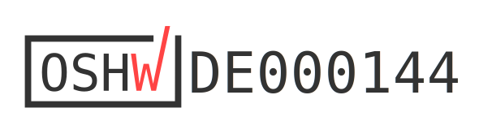

Funding & Open Source
Where do I get a Tiliqua?
Tiliqua will be available on Crowd Supply first. If the campaign is successful, I will ship these units first and then plan to make Tiliqua available on my own webshop and potentially other retailers.
Funding
We would like to acknowledge partial funding of the Tiliqua project from the NGI Commons Fund, a fund established by NLnet with financial support from the European Commission’s Next Generation Internet program.
Open Hardware
{kind=link}
Tiliqua is an Open Hardware project listed on oshwa.org.
License
The hardware and gateware in this project is largely covered under the CERN Open-Hardware License V2 CERN-OHL-S, mirrored in the LICENSE text in this repository. Some gateware and software is covered under the BSD 3-clause license - check the header of the individual source files for specifics.
The above LICENSE and copyright notice do NOT apply to imported artifacts in this repository (i.e datasheets, third-party footprints), or dependencies released under a different (but compatible) open-source license.
Please note the licenses do NOT grant permission to use the apf.audio brand or graphics found on the panel designs. If you produce your own panel, make sure these are removed.
Derivative works
If you create or manufacture your own derivative hardware, all graphics on the panel design, the name apf.audio, the names of any apf.audio products and the names of the authors, are not to be used in derivative hardware or marketing materials, except where obligated for attribution and for retaining the above copyright notice.
For example, your 3U adaptation of “apf.audio Tiliqua” could be called “Gizzard Modular - Lizardbobulator”.